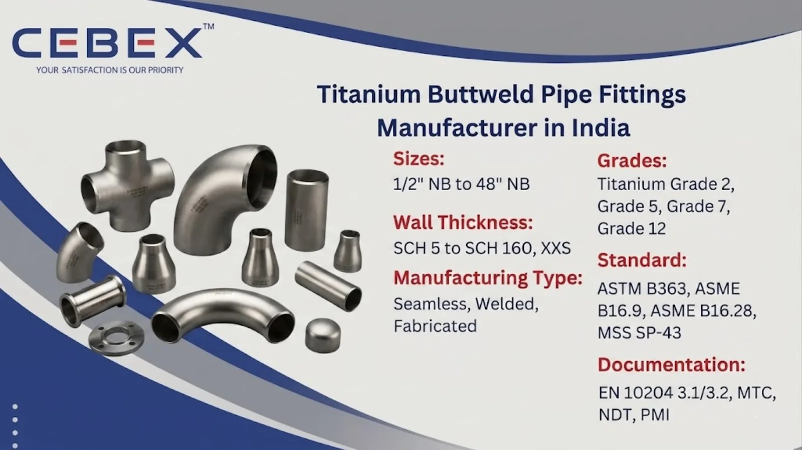

Leading Manufacturer & Exporter of Titanium Buttweld Pipe Fittings
In highly corrosive and demanding industrial environments, the reliability, dimensional accuracy, and corrosion resistance of piping components are critical for operational safety and long-term performance. As a leading Titanium Buttweld Pipe Fittings Manufacturer in India, CEBEX STEEL INDIA supplies premium-quality titanium pipe fittings engineered for high-performance industrial applications across chemical processing, marine engineering, offshore installations, desalination plants, aerospace projects, and power generation industries.
Our advanced manufacturing facility is equipped with modern forming, welding, machining, and inspection technology that enables us to produce Titanium Buttweld Pipe Fittings with excellent dimensional precision and metallurgical integrity. We manufacture seamless, welded, and fabricated titanium fittings in various configurations including elbows, tees, reducers, stub ends, caps, bends, and crosses.

Selecting the right Titanium Buttweld Pipe Fittings supplier is essential for maintaining the integrity and reliability of industrial piping systems. CEBEX STEEL INDIA has earned the trust of EPC contractors, procurement companies, project consultants, and industrial buyers across India and global markets due to our strong commitment to quality, technical expertise, and customer-focused manufacturing solutions. We are an ISO 9001:2015 certified company manufacturing titanium fittings in accordance with ASTM, ASME, DIN, EN, ANSI, and MSS standards.
Our in-house inspection and testing facility performs comprehensive quality checks including PMI testing, hydrostatic testing, radiographic examination, ultrasonic testing, hardness testing, and dimensional verification. Every Titanium Buttweld Pipe Fitting supplied by us is fully traceable from raw material procurement to final dispatch and is accompanied by complete documentation including EN 10204 3.1/3.2 Mill Test Certificates, NDT reports, and raw material certificates. Our export division ensures secure packaging, fast delivery schedules, and smooth international logistics support for projects across Africa, the Middle East, Southeast Asia, Europe, and other global markets.
Our Titanium Buttweld Pipe Fittings are manufactured using high-quality titanium raw materials sourced from approved mills and processed under strict quality control systems. Titanium fittings are widely preferred for industrial applications requiring superior corrosion resistance, lightweight construction, excellent strength-to-weight ratio, and long-term operational reliability.
The following table summarizes the technical specifications and features of our Titanium Buttweld Pipe Fittings:
| Feature | Specification / Detail |
|---|---|
| Standards | ASTM B363, ASME B16.9, ASME B16.28, MSS SP-43, ANSI B16.25 |
| Grades | Grade 2, Grade 5, Grade 7, Grade 12, WP1, WP2, WP11, WP12 |
| Types | Elbows, Tees, Reducers, Stub Ends, Caps, Bends, Crosses |
| Size Range | ½" NB to 48" NB |
| Wall Thickness | SCH 5, SCH 10, SCH 20, SCH 40, SCH 80, SCH 160, XXS |
| Manufacturing Type | Seamless, Welded, Fabricated |
| Manufacturing Method | Cold Formed, Hot Formed, Forged, Machined |
| Surface Finish | Pickled, Polished, Sand Blasted, Shot Blasted |
| Dimensions Standard | ASME, ANSI, DIN, EN, ISO |
| Documentation | EN 10204 3.1/3.2, MTC, NDT, PMI, Hydro Test |
Our product portfolio includes a comprehensive range of Titanium Buttweld Pipe Fittings designed for industrial piping systems operating under highly corrosive and elevated temperature conditions. We manufacture titanium elbows in 45°, 90°, and 180° configurations including both long radius and short radius elbows.
Our range also includes equal tees, reducing tees, concentric reducers, eccentric reducers, pipe caps, stub ends, pipe bends, crosses, collars, and custom fabricated titanium fittings manufactured according to client drawings and project specifications. These fittings are available in seamless, welded, and fabricated construction depending on the application requirements and pressure conditions.
We manufacture Titanium Buttweld Pipe Fittings in multiple commercially pure titanium and titanium alloy grades suitable for highly corrosive and high-temperature applications. All raw materials are procured from approved mills with complete traceability, heat number identification, and mill certification documentation.
| Titanium Grade | Typical Applications | Standards |
|---|---|---|
| Titanium Grade 2 | Chemical processing, marine, desalination | ASTM B363 WP2 |
| Titanium Grade 5 (Ti-6Al-4V) | Aerospace, offshore, high-strength systems | ASTM B363 |
| Titanium Grade 7 | Acid handling and chemical plants | ASTM B363 |
| Titanium Grade 12 | Heat exchangers and process piping | ASTM B363 |
| ASTM B363 WP1 | General titanium piping systems | ASTM B363 |
| ASTM B363 WP11/WP12 | High-performance industrial applications | ASTM B363 |
Every Titanium Buttweld Pipe Fitting undergoes rigorous testing and inspection to ensure full compliance with international standards. Our laboratory performs chemical analysis, tensile testing, flattening tests, hardness testing, PMI testing, and non-destructive examinations.
| Element | Composition (%) |
|---|---|
| Nitrogen (N) | 0.03 max |
| Carbon (C) | 0.08 max |
| Hydrogen (H) | 0.015 max |
| Iron (Fe) | 0.30 max |
| Oxygen (O) | 0.25 max |
| Titanium (Ti) | Balance |
| Property | Value |
|---|---|
| Tensile Strength | 344 MPa min |
| Yield Strength | 275 MPa min |
| Elongation | 20% min |
| Standard | Grade |
|---|---|
| ASTM | Grade 2 |
| UNS | R50400 |
| DIN / WNR | 3.7035 |
All inspection reports and test certificates are supplied with every shipment to ensure full transparency and traceability.
We manufacture Titanium Buttweld Pipe Fittings in sizes ranging from ½" NB to 48" NB with various wall thicknesses and schedules. Our products comply with ASME B16.9, ASME B16.28, MSS SP-43, DIN, EN 10253, and other international dimensional standards. Custom dimensions and fabricated titanium fittings are available upon request.
| Size (NB) | Center to End (mm) | Outside Diameter (mm) | Wall Thickness (mm) |
|---|---|---|---|
| ½" | 38 | 21.3 | 2.77 |
| 1" | 51 | 33.4 | 3.38 |
| 2" | 76 | 60.3 | 3.91 |
| 4" | 152 | 114.3 | 6.02 |
| 8" | 305 | 219.1 | 8.18 |
Our Titanium Buttweld Pipe Fittings are extensively used in industries requiring superior corrosion resistance, lightweight construction, and exceptional mechanical performance. In chemical processing industries, titanium fittings are widely used for handling chlorides, oxidizing acids, and aggressive chemicals. Marine and offshore industries utilize titanium fittings for seawater systems, offshore structures, and desalination plants due to their outstanding resistance to seawater corrosion and biofouling.
Titanium pipe fittings are also used in aerospace engineering, petrochemical plants, heat exchangers, power generation facilities, pulp and paper industries, oil & gas processing systems, and pharmaceutical manufacturing plants where high-performance materials are essential for long-term operational reliability.
Every Titanium Buttweld Pipe Fitting undergoes comprehensive inspection and testing including PMI testing, hydrostatic testing, radiographic testing, ultrasonic examination, hardness testing, flattening tests, dimensional verification, and visual inspection.
We provide complete documentation with every shipment including EN 10204 3.1/3.2 certificates, Mill Test Certificates, chemical analysis reports, mechanical test reports, hydro test reports, and radiography reports.
Our Titanium Buttweld Pipe Fittings are packed using export-grade wooden boxes, fumigated pallets, bubble wrapping, and plastic protective packaging to prevent transit damage. Every fitting is properly marked with heat number, grade, size, and specification details.
Our export logistics team manages complete shipping documentation including commercial invoices, packing lists, certificates of origin, and inspection certificates. We regularly export to Africa, the Middle East, Southeast Asia, and Europe.
As a trusted Titanium Buttweld Pipe Fittings Manufacturer in India, CEBEX STEEL INDIA supplies premium-quality titanium fittings to industrial projects throughout Africa. Our products are widely used in mining operations, offshore oil & gas projects, desalination plants, marine engineering, chemical processing facilities, and infrastructure developments across Nigeria, Egypt, Kenya, South Africa, Ethiopia, and neighboring African regions.
Our export team understands the technical documentation and logistics requirements of African industrial projects and ensures smooth delivery with complete compliance support, inspection documentation, and export-standard packaging. To learn more about our specialized solutions for the continent, visit our Africa Titanium Buttweld Pipe Fittings Exporter page.
In addition to Titanium Buttweld Pipe Fittings, we also manufacture and export Stainless Steel Buttweld Pipe Fittings, Duplex Buttweld Pipe Fittings, Super Duplex Buttweld Pipe Fittings, Inconel Buttweld Pipe Fittings, Hastelloy Buttweld Pipe Fittings, and Monel Buttweld Pipe Fittings. These high-performance alloy buttweld fittings are engineered for highly corrosive, high-pressure, and elevated-temperature industrial environments requiring exceptional strength, corrosion resistance, thermal stability, and long-term operational reliability.
Our technical team provides expert guidance on material selection and specifications to ensure optimal performance for your critical applications.
Browse our full range:
Our clients choose CEBEX STEEL INDIA for our technical expertise, commitment to quality, and responsive service. We offer direct-from-manufacturer pricing, flexible order quantities, and comprehensive after-sales support. Our engineering team is available to assist with material selection, specification review, and custom design, ensuring that you receive the optimal solution for your application.
Our titanium fittings are manufactured according to ASTM B363, ASME B16.9, ASME B16.28, MSS SP-43, ANSI B16.25, DIN, and EN standards.
We manufacture Titanium Grade 2, Grade 5, Grade 7, Grade 12, WP1, WP2, WP11, and WP12 Buttweld Pipe Fittings.
We supply elbows, tees, reducers, caps, stub ends, bends, crosses, and custom fabricated titanium fittings.
Yes, every shipment includes EN 10204 3.1/3.2 Mill Test Certificates and additional inspection reports as required.
Yes, we export Titanium Buttweld Pipe Fittings to Africa, the Middle East, Southeast Asia, Europe, and global industrial markets.